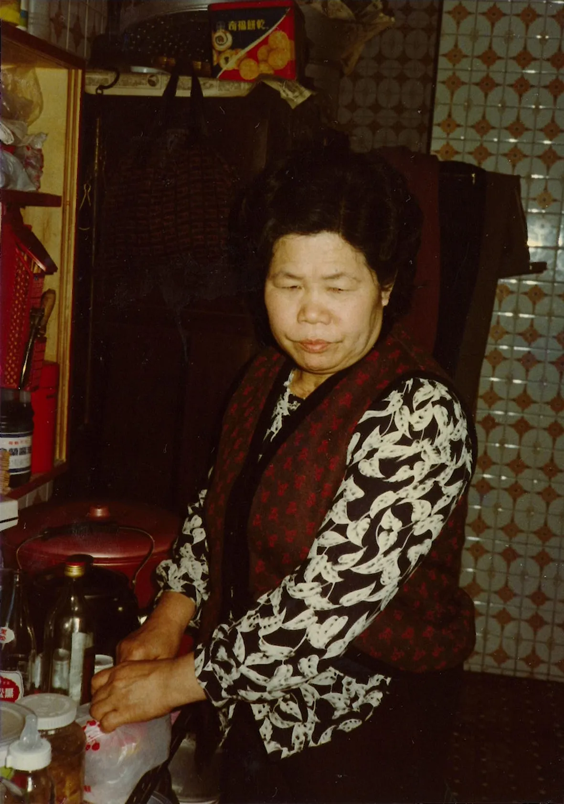
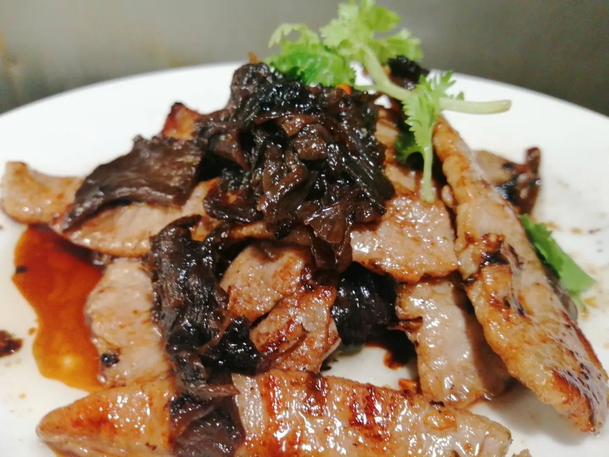
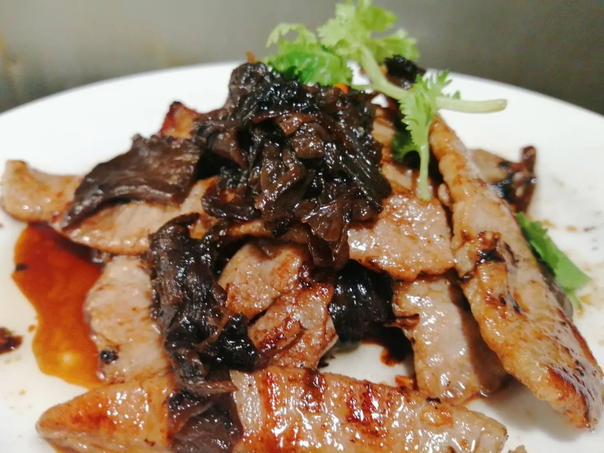

甘妹緣起
【甘妹弄堂】的名字，源自老闆第二代的外婆 陳甘妹女士。在竹東的客家文化底蘊中，她是一位質樸、傳統的莊腳人，也是香蓮創辦人，潘扶旺的岳母、劉素玲的母親。這個名字不僅是品牌的象徵，更是對傳統家庭價值和美食傳承的致敬。

陳甘妹女士以其家常美食為家人帶來溫馨，而甘妹弄堂的靈感是延續她的故事，將傳統的客家味道帶進現代，讓每一道菜都承載著家庭的溫暖與美好，也是甘妹弄堂文化的根基。
甘妹弄堂的菜餚是客家、台式和上海等多樣料理文化的完美融合。走入甘妹弄堂，您將品嚐到客家人偏愛的鹹、肥、香的特色。
 

鐵板工法
獨家鐵板工法，讓台灣傳統美食融入上海味，為每一位來用餐的客人，留下難以忘懷的美食記憶。